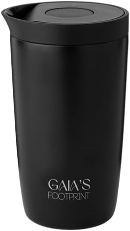
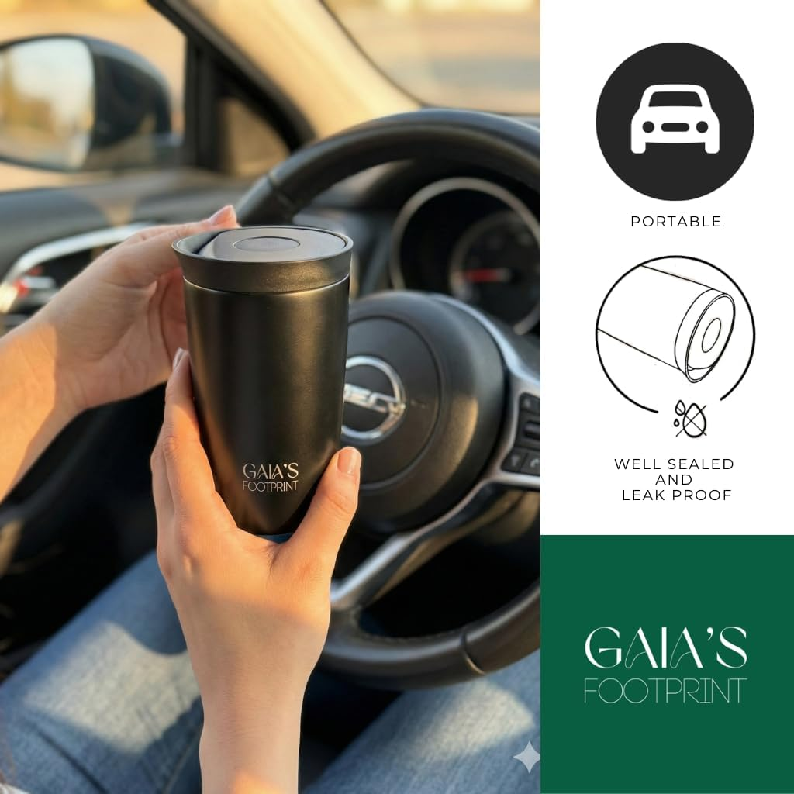
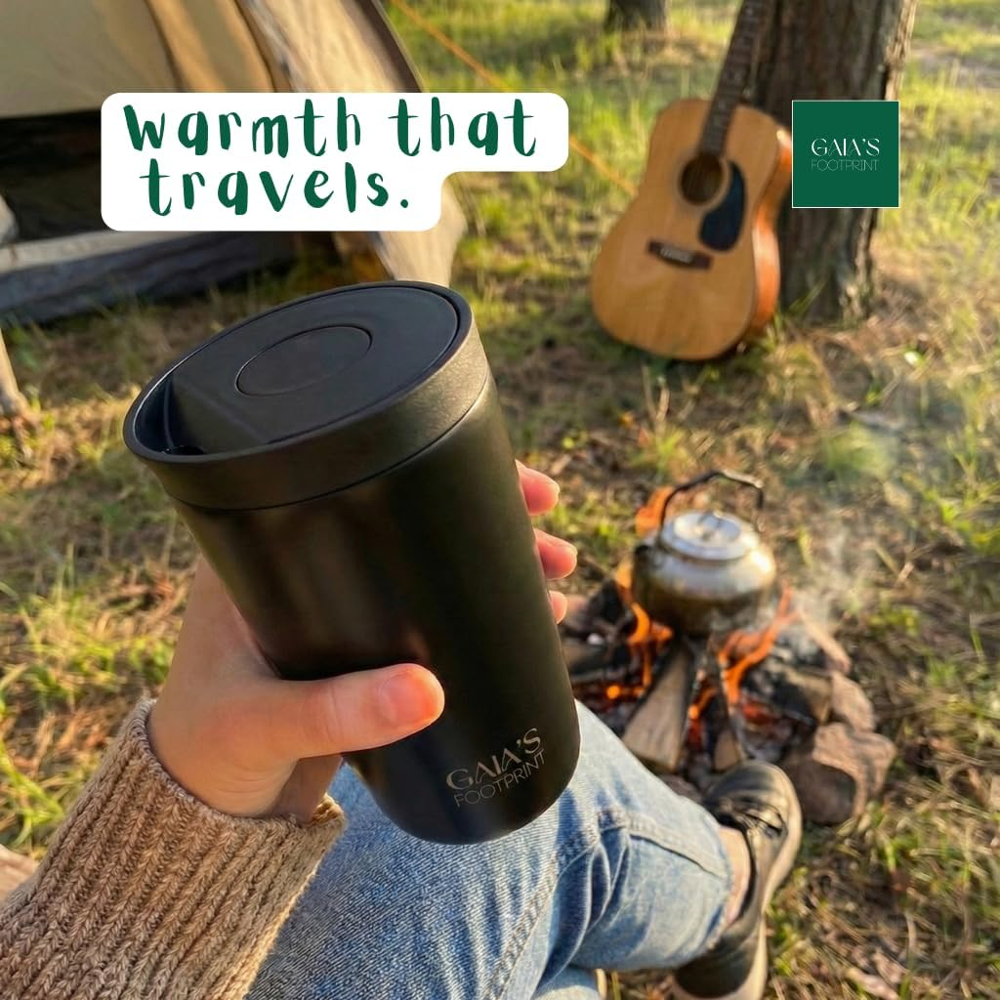
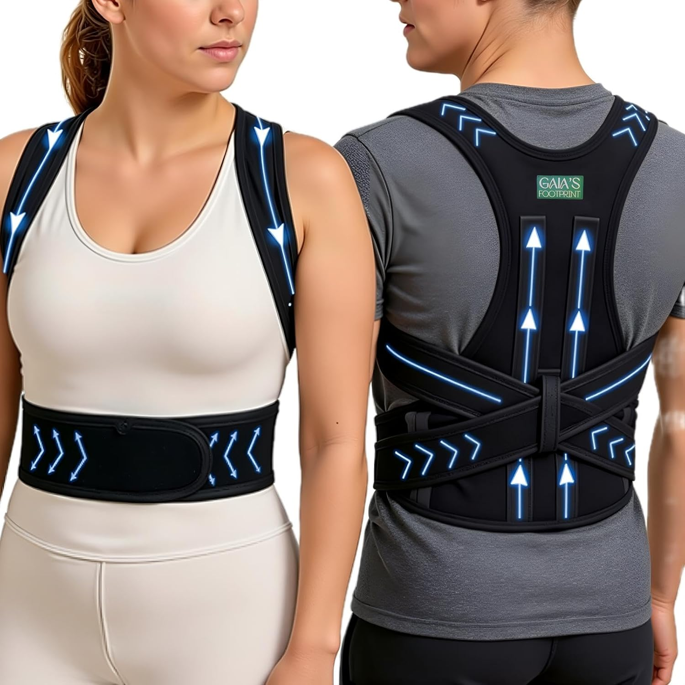
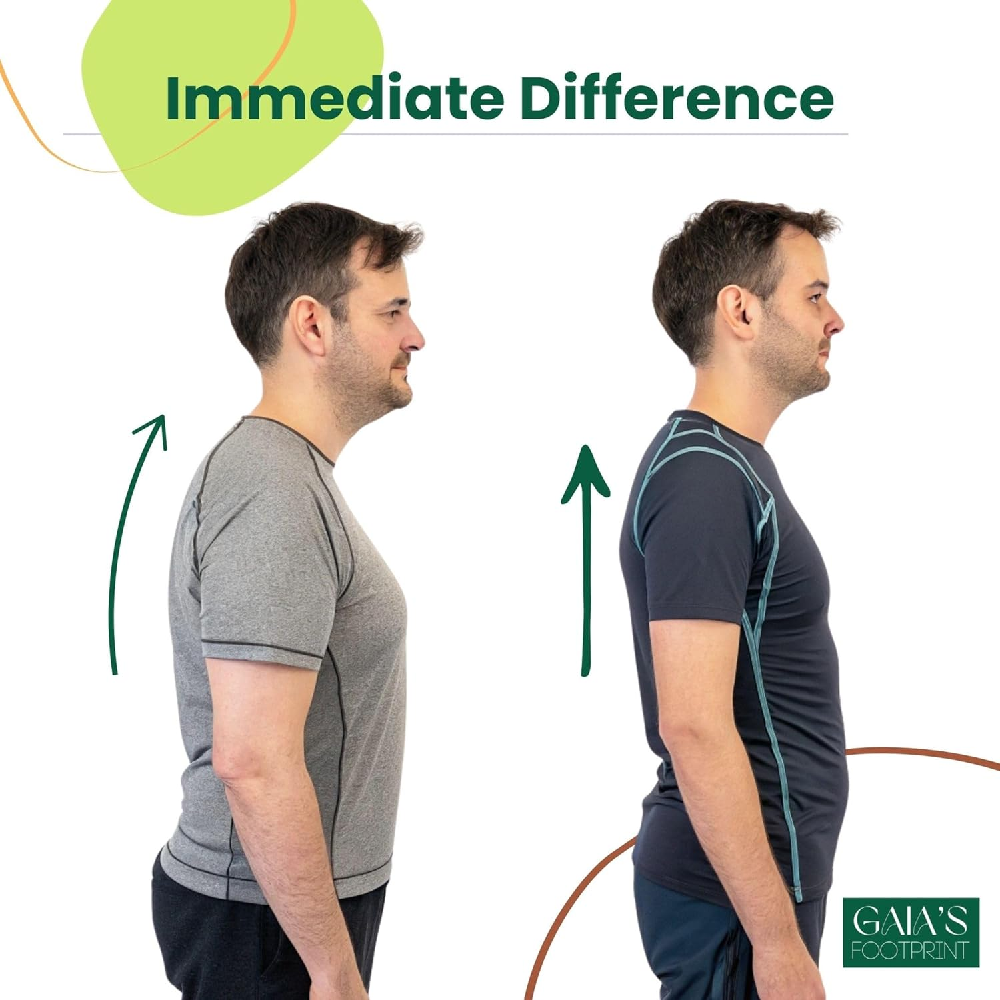

Weniger, aber besser.
Gaia’s Footprint macht genau zwei Dinge: einen Thermobecher aus Edelstahl und einen Haltungstrainer für lange Tage am Schreibtisch. Keine Kollektion, kein Katalog — zwei Gegenstände, die funktionieren.
Thermobecher



Doppelwandiger Edelstahl hält Kaffee sechs Stunden heiß und Kaltes zwölf Stunden kalt — ohne Kondenswasser außen. Der Deckel öffnet mit einer Hand, schließt mit einem Klick und bleibt dicht, auch kopfüber in der Tasche. Der schlanke Fuß passt in jeden Becherhalter.
- Volumen
- 350 ml
- Material
- Edelstahl, BPA-frei
- Isolierung
- Doppelwandig, vakuumisoliert — heiß 6 h, kalt 12 h
- Verschluss
- Einhand-Klick, auslaufsicher
- Öffnung
- 8,2 cm — leicht zu befüllen und zu reinigen
- Passform
- Becherhalter in Auto und Fahrrad
Haltungstrainer


Ein leichter Gurt, der Schultern und Rücken sanft an eine aufrechte Haltung erinnert — statt sie zu erzwingen. Atmungsaktives Material, eine verstärkte Rückenführung und ein breiter Lendengurt, dezent genug für unter das Hemd. Für Bürotage, Training und alles dazwischen.
- Größe
- Verstellbar S–XL, unisex
- Material
- Atmungsaktiv, weiche Kanten
- Stütze
- Verstärkte Rückenschlaufe, breiter Lendengurt
- Gurt
- Extra lang, großer Einstellbereich
- Tragen
- Unauffällig unter Kleidung, Büro und Sport